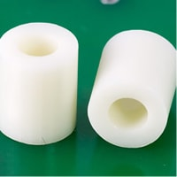
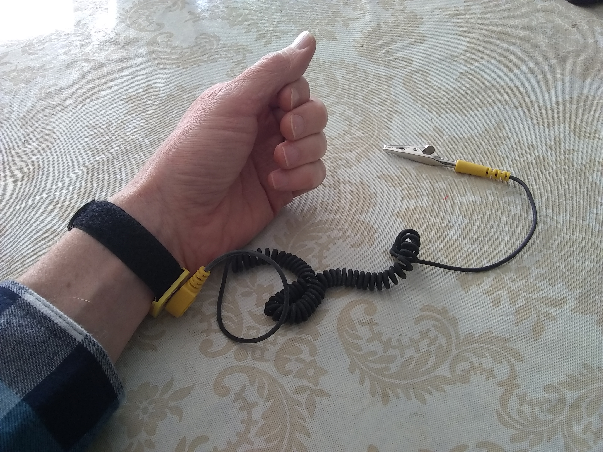

Here are the supplies you should get before starting this project. Some of these you cannot do without and some are optional.
Let me quickly explain the use of each of these:
The Phillips screwdriver is the most indispensable tool you will use as you build your new computer. Almost every component you assemble will require it as most are put together with screws. If you don’t have one, buy a #2 Phillips head screwdriver. You may also use other sizes for some assembly, but #2 will likely be the one you use most.
If you can get one, use a magnetic screwdriver. There is nothing more aggravating than having your screw fall down into the case and hide behind tightly assembled components.
Let’s talk about the screws. You will want a collection of small Phillips screws. There is more than one size and threading you can use, but keep a variety on hand for the assembly.
Motherboard spacers are small, usually plastic, pieces (see picture above) that keep the motherboard from touching the metal of the case. This keeps the electronics from shorting out or causing other electronic damage. Standoffs can be used as well, which screw into the case, keeping the motherboard from touching.
There is a bit of debate about anti-static straps. The anti-static strap, shown in the figure above, is used to protect your computer parts from static electricity. Static electricity can destroy many of the more sensitive computer parts and must be avoided at all costs. To use the strap, wrap tie Velcro section around your wrist and then clamp the alligator clip to anywhere on the metal computer case. This keeps you grounded.
Many people don’t use this strap. If you choose not to, follow these safety precautions:
One last thing you need in order to work safely on your computer-a clean, well-lit place to work. Clean, because dust can destroy computer parts. So maybe the garage is not the best place to work on this project unless you first clean up your workspace beforehand.
Make sure you have lots of light. It is often hard to see what is going inside the case as you attempt to plug in certain components or find the holes for the screws. If you have access to a swinging arm desk lamp, that will make things easier. A good flashlight might come in handy as well.
While it is possible to do this work on a clean floor (remember, no carpet), it might be more comfortable if you can do it on a desk. Clean it off so you don’t loose screws or get dust in your computer.